São ramificações de um projeto de software ou documento e tem como objetivo o desenvolvimeto de:
As equipes podem trabalhar paralelamente:
1° você precisa criar um novo repositório no GitHub:
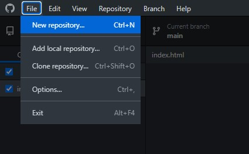2° de um nome ao seu novo repositório e não esqueça de mudar a licença, caso queira que fique público:
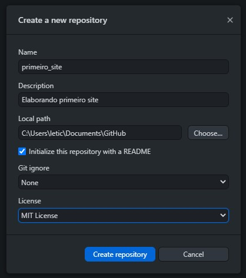3° agora clique para publicar no GitHub.com:
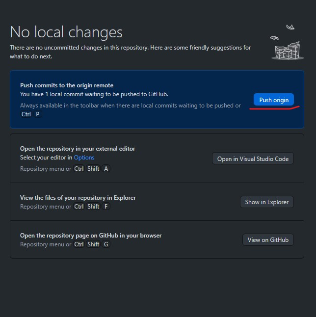4° atualize sua página web para localizar seu novo repositório:
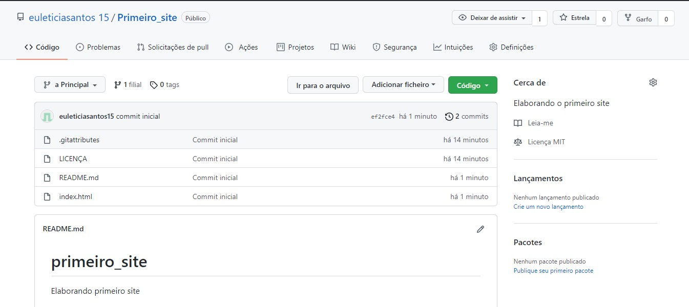
5° clique para abrir o Visual Studio Code:
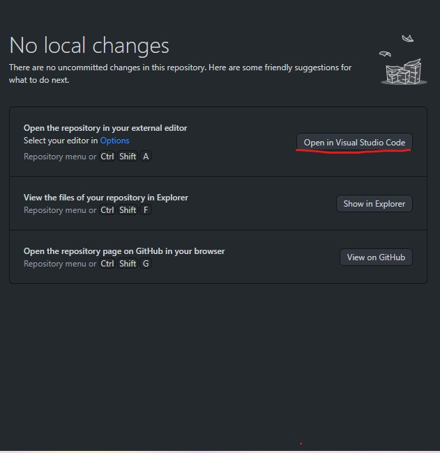6° agora vamos criar uma nova Branch Secundária
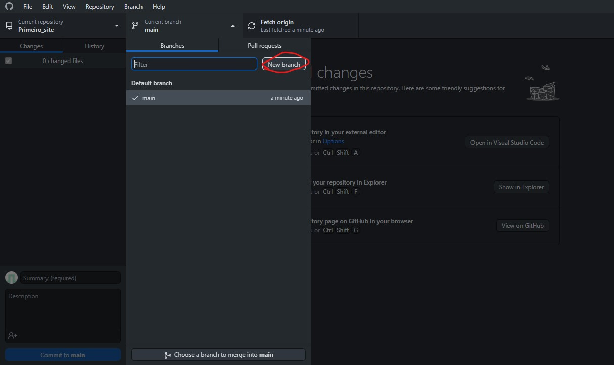7° nomeie sua nova Branch Secundária e clique para publicar no GitHub.com:
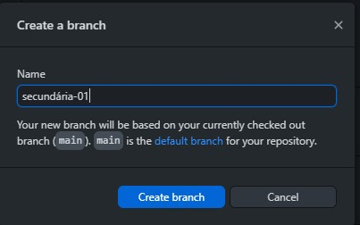
8° agora vamos fazer a junção das Branches, inclua as secudárias na Branch Main e clique para publicar:
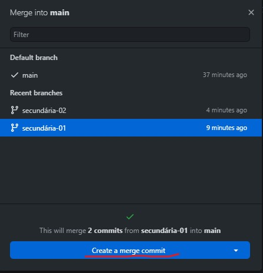9° ao incluir a Secundária02 irá aparecer um conflito, clique para ver qual é o conflito e em seguida clique em "Accept Both Changes"
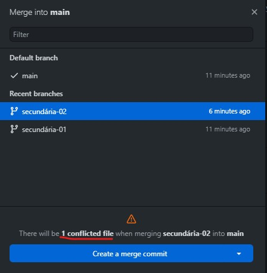O GitHub Pages oferece Hospedagem gratuita de sites. Basta criar uma nova conta e um repositório público e a URL será, por exemplo: http://nomeusuário.github.io/repositorio
1° entre no seu GitHub.com e escolha o repositório que deseja hospedar:
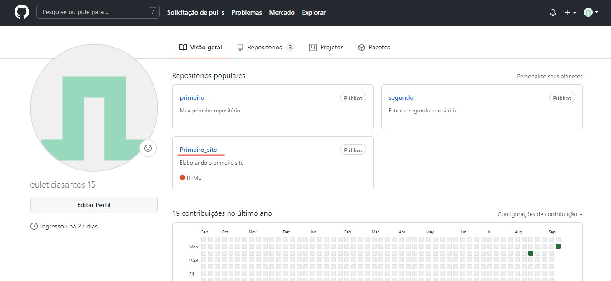2° clique em Definições (Settings):
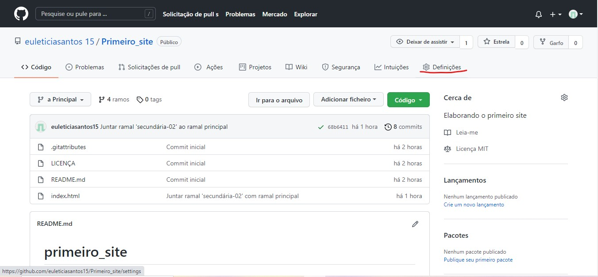3° role para baixo e verifique se a Zona de Perigo (Danger Zone) está público, se não estiver mude a visibilidade e então clique no item Páginas GitHub (GitHub Pages):
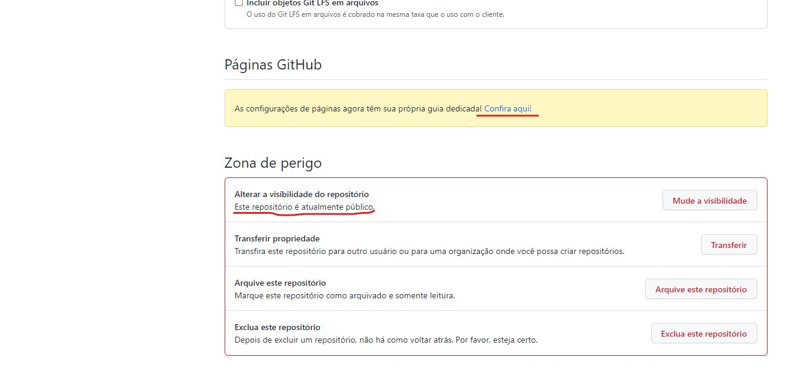4° clicando em GitHub Pages defina qual Branch quer e salve, assim seu site será publicado:
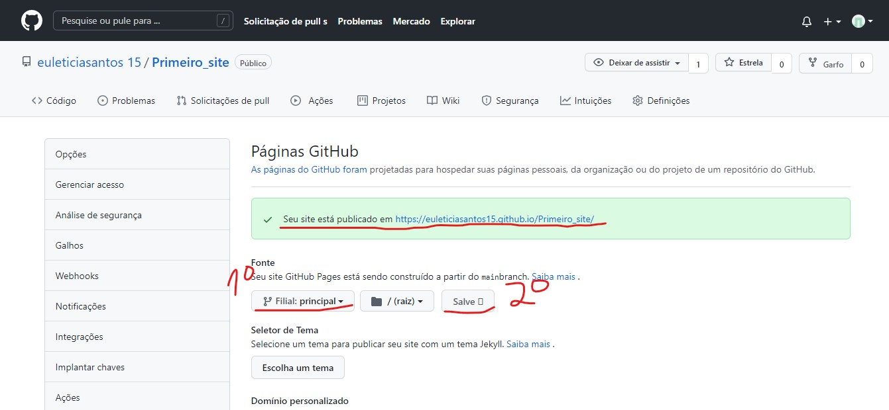